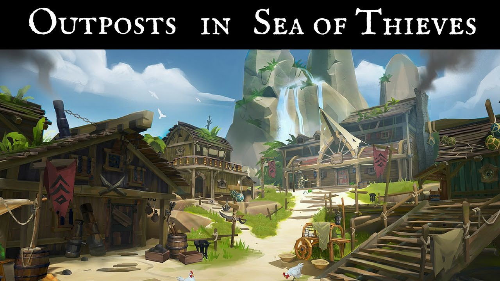
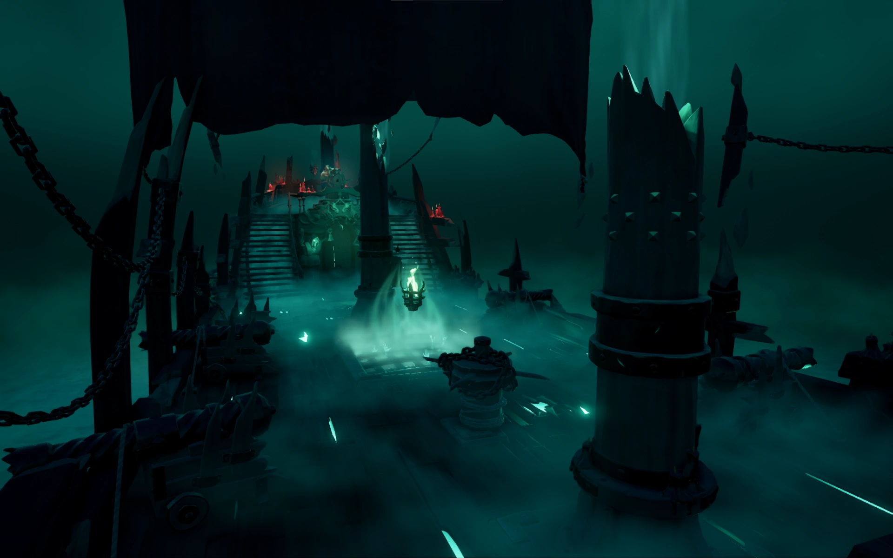
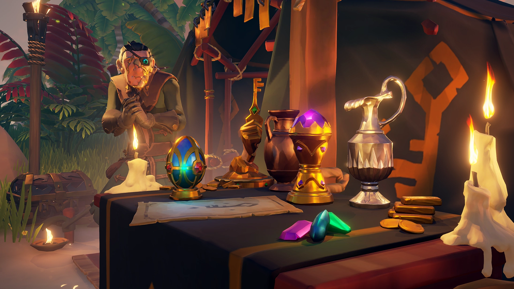
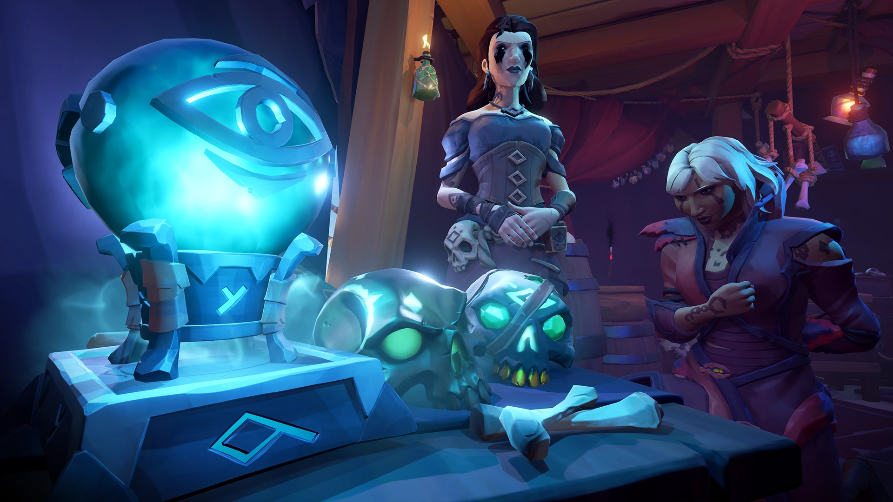
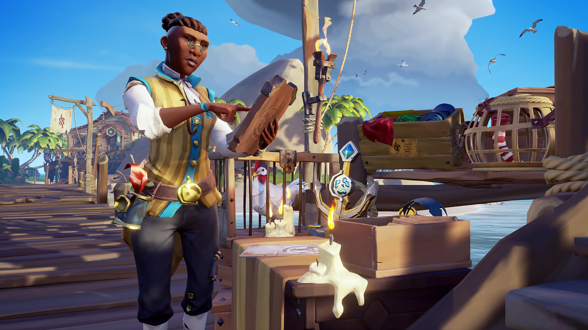
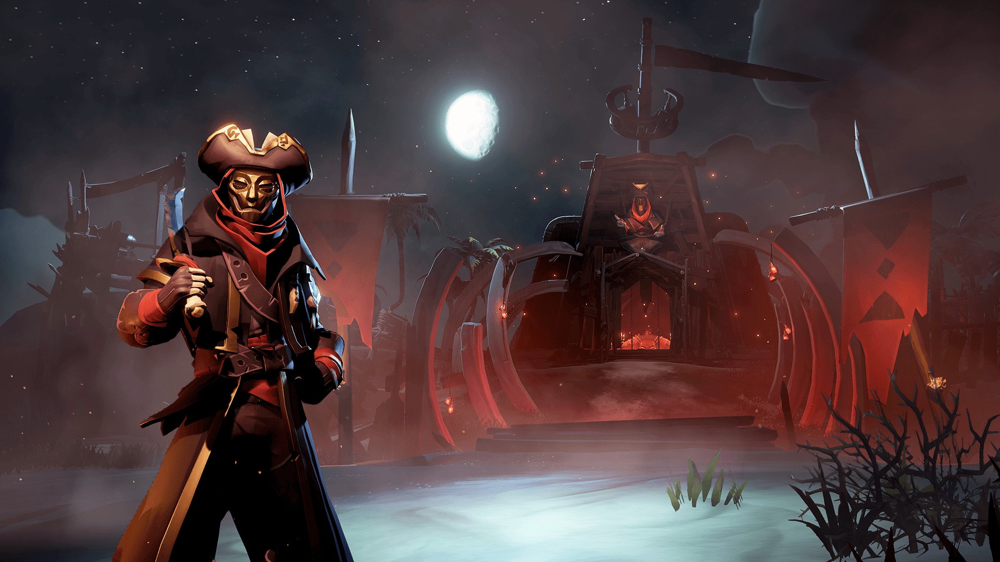
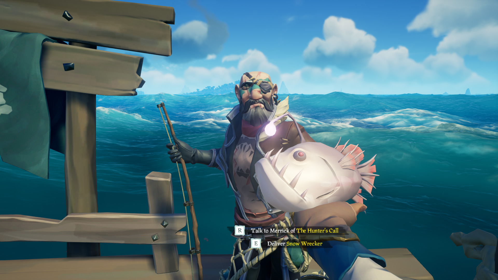
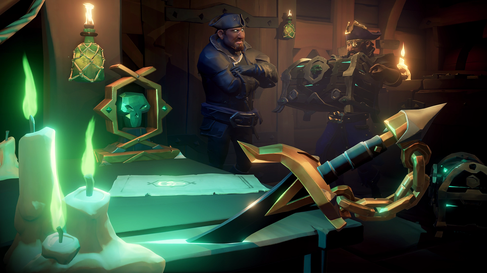

A Játékról:
A Sea of Thieves egy akció-kalandjáték, melyben átélhetjük a kalózélet izgalmas részeit. Kincset áshatunk, csontváz kapitány fejekért küzdhtünk, vagy akár állatokat is szállíthatunk. A szerveren a mi csapatunkon kívül még öt csapat lehet, akikkel szövetkezhetünk, vagy harcolhatunk. A kincseket amiket megszereztünk az úgynevezett "Outpostokon" kell leadni. Az Outpostokat három céh uralja a felszínen, akiknek dolgozhatunk. A Gold Hoarders, az Order of Souls és a Merchant Alliance. Ezeknek a céheknek van egy nagy ellensége. A Reaper's bones nevű céh. Az úgynevezett reaperek a játék fejvadászai. Ezeknek a játékosoknak a többi játékosra kell vadászniuk. Ezeken kívül van egy horgász céh is, a Hunter's call. A játék egyik fő célja az, hogy a játékos elérje a "Pirate Legends" rangot, mellyel többek között feloldja az utolsó céh zászlaját, az Athena's Fortune-t.
Néha a legjobb kalózok is végzetüket találják a tolvajok. Ilyenkor ha egy bajtárs sem tudja megmenteni a túlvilágra kerül, ahol a karakter felszáll egy kompra, amely visszavezeti az élők sorai közül. A túlvilágon teljesen máshogy telik az idő, ezért nekünk az ottani kaland csak pár másodpercesnek tűnik.
Gold Hoarders

Order of Souls

Merchant Alliance

Reaper's bones

Hunter's call

Athena's Fortune
